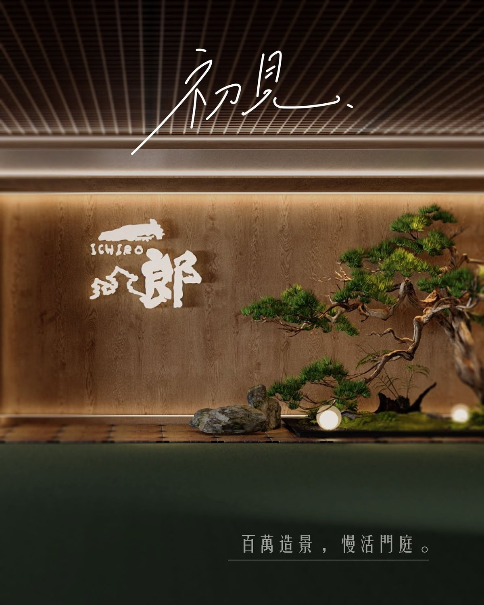
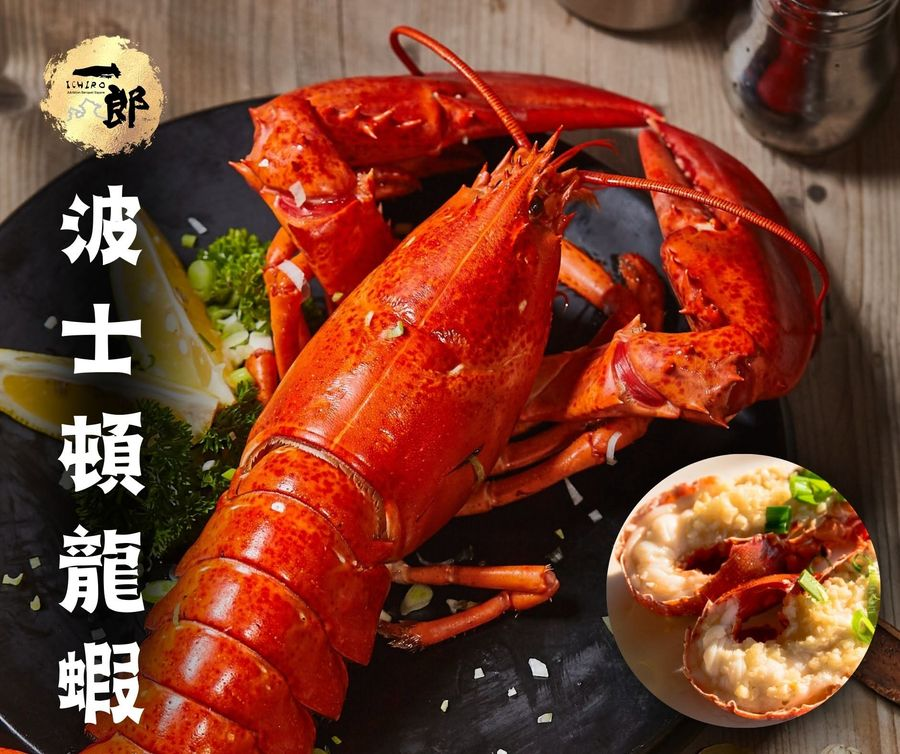
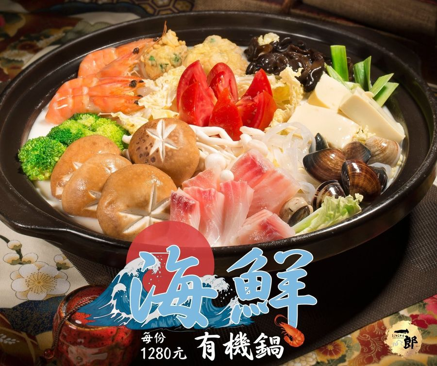
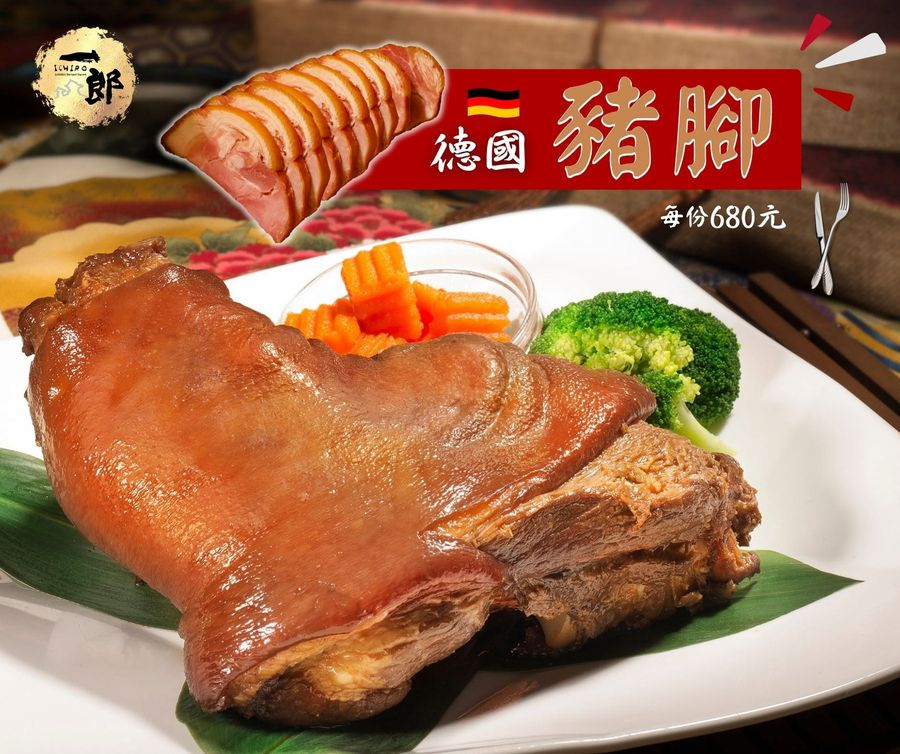
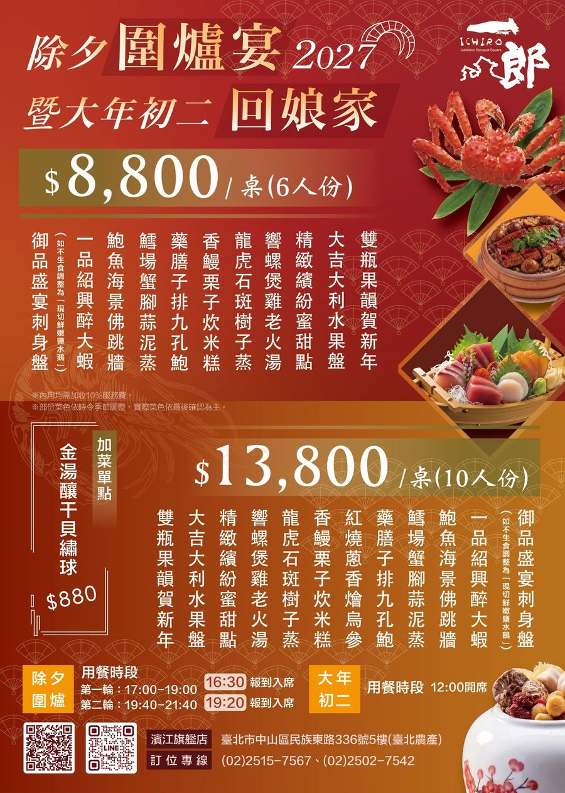
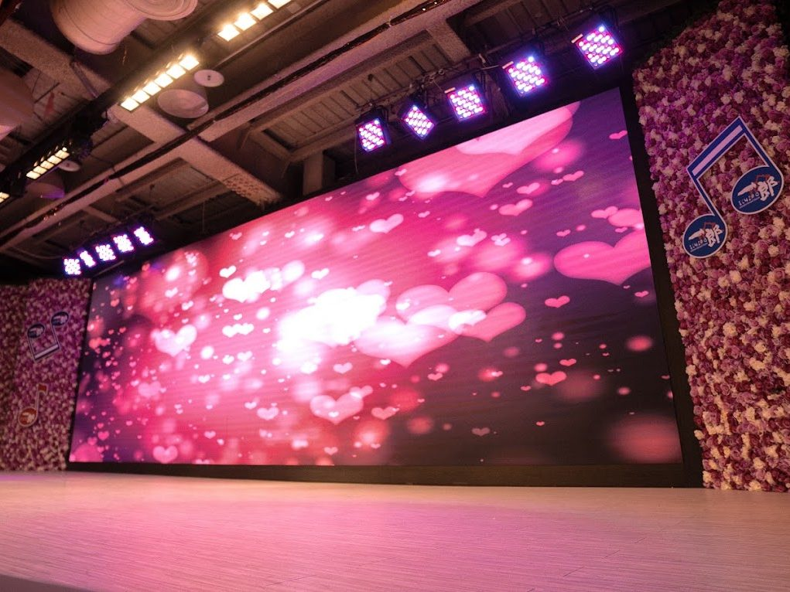

照片：尾牙開席與舞台images/21-weiya.jpg
照片：尾牙開席與舞台images/21-weiya.jpg尾牙春酒
企業行號、公協會的年度盛會。簡報、影片、摸彩名單直接投上 4 米以上 LED 大螢幕，後排賓客也看得清楚，摸彩與表演流程全力配合。
一郎宴會館｜1995 年創立・台北中山區
從 1 桌小酌到 800 人宴會
活動隔板彈性規劃，舞台、大螢幕、音控一應俱全。家族聚會、企業尾牙到社團大會，人多人少都能體面打理、盡興開席。
4.1｜Google 評論 2,642 則
照片：一郎宴會館 5 樓入口盆景造景images/02-hero.jpg 照片：一郎宴會館主宴會廳images/01-hero.jpg
照片：一郎宴會館主宴會廳images/01-hero.jpg菜色隨當季漁貨調整，點圖片可以放大看。
 照片：一郎宴會館尾牙春酒特別菜單，每桌 8,800 元起images/15-menu-weiya.jpg
照片：一郎宴會館尾牙春酒特別菜單，每桌 8,800 元起images/15-menu-weiya.jpg 照片：時令專區：頂級大閘蟹五兩重母蟹images/17-seasonal.jpg
照片：時令專區：頂級大閘蟹五兩重母蟹images/17-seasonal.jpg五兩重頂級母蟹，內用每隻 NT$650，原價 800 元。數量有限，售完為止。

照片：波士頓龍蝦images/73-dish-lobster.jpg
照片：海鮮有機鍋images/74-dish-hotpot.jpg
照片：德國豬腳images/75-dish-pork.jpg
照片：2027 除夕圍爐宴暨初二回娘家菜單：6 人份每桌 8,800 元、10 人份每桌 13,800 元；除夕 17:00–19:00、19:40–21:40 兩輪，初二 12:00 開席images/51-cny-eve.jpg從場地、舞台到菜色，宴會團隊一次為您規劃。
照片：尾牙開席與舞台images/21-weiya.jpg企業行號、公協會的年度盛會。簡報、影片、摸彩名單直接投上 4 米以上 LED 大螢幕，後排賓客也看得清楚，摸彩與表演流程全力配合。
 照片：典禮會場與舞台images/24-ceremony.jpg
照片：典禮會場與舞台images/24-ceremony.jpg社團交接、年度大會、記者會，可依需求搭設舞台無障礙坡道，讓每位貴賓順利上台。
 照片：婚宴布置images/22-wedding.jpg
照片：婚宴布置images/22-wedding.jpg承辦文定、喜宴與長輩壽宴。依實際桌數隔間，場面恰到好處；成長影片、婚紗照都能在大螢幕播放。
 照片：家族聚餐images/23-family.jpg
照片：家族聚餐images/23-family.jpg三代同堂、同學會、社團例會都合適，私人宴客可安排貴賓室。
 照片：外燴餐檯或餐盒images/25-catering.jpg
照片：外燴餐檯或餐盒images/25-catering.jpg鄰近地區 1 桌起送，較遠地點依桌數安排。曾至陽明山辦桌，也承辦過台北馬拉松賽後餐盒。
硬體一次備齊，主辦人只要專心招呼賓客。
| 宴會廳 | 挑高宴會廳，單廳最多約 800 人 |
|---|---|
| 彈性隔間 | 全場活動隔板，可規劃 1 至 80 桌 |
| 貴賓室 | 適合私人宴客與小型聚會 |
| LED 螢幕 | 舞台主牆巨幅 LED（寬 4 米以上），左右兩側另有輔助螢幕 |
| 影音播放 | 可接筆電，播放簡報、影片 |
| 音響 | 專業音響、無線麥克風，現場可派專人協助 |
| 卡拉 OK | 請於訂位時提出需求 |
| 友善設施 | 電梯、無障礙洗手間，可依需求搭設舞台無障礙坡道 |
| 停車 | 大樓專屬停車場，設有大型車位區，消費折抵 4 小時 |
| 酒水 | 可自備酒水，不收開瓶費 |
 照片：一郎宴會館主宴會廳全景images/31-stage.jpg
照片：一郎宴會館主宴會廳全景images/31-stage.jpg
照片：舞台巨幅 LED 與花牆images/32-space.jpg 照片：貴賓室圓桌images/33-vip.jpg
照片：貴賓室圓桌images/33-vip.jpg 照片：大樓外觀與一樓指示牌images/41-building.jpg
照片：大樓外觀與一樓指示牌images/41-building.jpg1. 抵達台北農產公司大樓
2. 開車直接停進大樓停車場
 照片：5 樓入口images/43-entrance.jpg
照片：5 樓入口images/43-entrance.jpg3. 搭電梯到 5 樓，出電梯即達
填好資料按送出，會自動開啟 LINE 並帶入洽詢內容。您只要按下「傳送」，專人收到後會盡快與您聯繫。
不想填表，也歡迎直接聯繫：
一郎餐飲有限公司（以下稱一郎宴會館）依《個人資料保護法》第 8 條，告知您以下事項：
網站瀏覽紀錄：本網站使用 Google Analytics 統計瀏覽人數與點擊情形，可能使用 Cookie。這些資料不會用來辨識您的身分，您可以在瀏覽器設定中停用 Cookie。